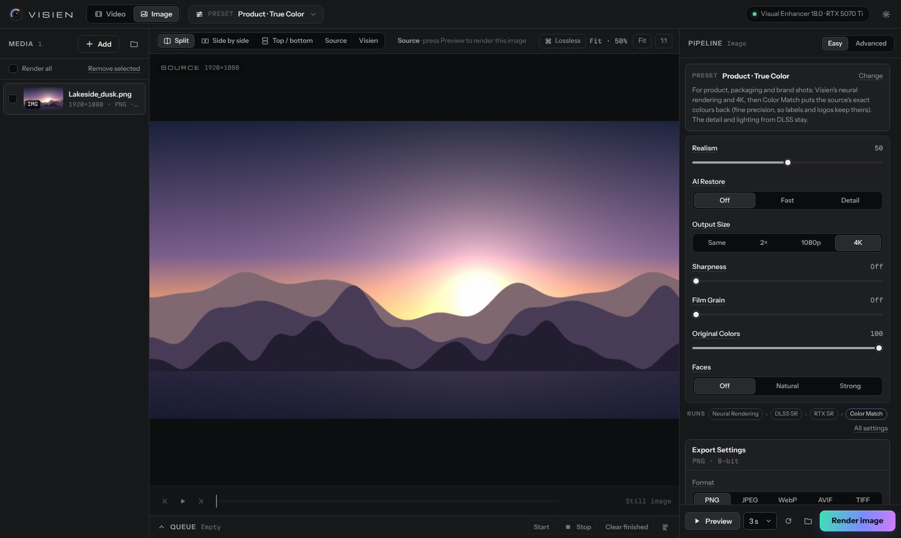

Visien is a desktop enhancement studio for AI-generated video and images. It puts NVIDIA DLSS 5 neural rendering, SeedVR2 restoration, RIFE motion and true-colour matching into one ordered pipeline, and shows you the difference on a few seconds of your clip before you render. Visien, yapay zekâ ile üretilmiş video ve görseller için bir masaüstü iyileştirme stüdyosu. NVIDIA DLSS 5 neural rendering'i, SeedVR2 restorasyonunu, RIFE ara kare üretimini ve orijinal renge eşlemeyi tek bir sıralı akışta birleştirir; render almadan önce farkı klibinin birkaç saniyesinde gösterir.

Visien runs Visual Enhancer's NVIDIA cards and its own AI models in one chain. Pictures travel between steps losslessly; the audio comes from your source.Visien, Visual Enhancer'ın NVIDIA kartlarını ve kendi AI modellerini tek zincirde çalıştırır. Görüntü adımlar arasında kayıpsız taşınır, ses kaynaktan gelir.
Restores real texture in soft, smeared, compressed AI video.
Yumuşak, bulanık, sıkıştırılmış AI videosuna gerçek doku.
GFPGAN or CodeFormer for faces that drift or melt.
Kayan, eriyen yüzler için GFPGAN ya da CodeFormer.
DLSS 5 rebuilds skin, hair and surfaces.
DLSS 5 cildi, saçı ve yüzeyleri yeniden kurar.
DLAA clean-up or Ray Reconstruction.
DLAA temizliği ya da Ray Reconstruction.
24 → 48/60 fps, safe at scene cuts.
24 → 48/60 fps, sahne geçişinde güvenli.
To 4K by the short side.
Kısa kenardan 4K'ya.
Film grain, LUTs, sharpening.
Film greni, LUT, keskinlik.
Puts the source's colours back.
Kaynağın renklerini geri koyar.
Cards marked AI run in Visien's own runtime (PyTorch, on NVIDIA or AMD). The others run in Visual Enhancer on an NVIDIA RTX GPU.AI işaretli kartlar Visien'in kendi ortamında çalışır (PyTorch; NVIDIA ya da AMD). Diğerleri NVIDIA RTX kartta Visual Enhancer'da çalışır.
DLSS 5 Neural Rendering through Merserk's Visual Enhancer turns the waxy, plastic look of generated video into skin, fabric and light that read as photographed.
Merserk'in Visual Enhancer'ı üzerinden DLSS 5 Neural Rendering, üretilmiş videonun mumsu, plastik görünümünü fotoğraflanmış gibi duran cilde, kumaşa ve ışığa çevirir.
SeedVR2 (ByteDance) removes softness and compression and lifts small clips to 1080p. Face restoration repairs faces without flicker.
SeedVR2 (ByteDance) yumuşaklığı ve sıkıştırmayı giderir, küçük klipleri 1080p'ye çıkarır. Yüz onarımı titreşim olmadan yüzleri düzeltir.
Color Match compares the finished picture with your source and brings product, brand and skin colours back, even on a render that is already finished. DLSS detail and lighting stay; lightness only returns where a colour like a yellow logo would otherwise turn orange.
Color Match bitmiş görüntüyü kaynağınla karşılaştırır; ürün, marka ve ten renklerini, bitmiş bir render'da bile geri getirir. DLSS'in ayrıntısı ve ışığı kalır; parlaklık yalnızca sarı bir logo gibi renklerin turuncuya döneceği yerlerde geri gelir.
Temporal models need a few frames after every cut. Visien gives each shot a mirrored run-up and cuts it out again, so the first frames of a shot match the rest.
Zamansal modeller her kesmeden sonra birkaç kareye ihtiyaç duyar. Visien her plana ters çevrilmiş kısa bir ısınma ekleyip sonra çıkarır; planın ilk kareleri geri kalanıyla aynı görünür.
Split, side-by-side and top/bottom previews, lossless frame checks, and a labelled RAW / NEURAL ENHANCED comparison copy next to any render, also afterwards from the queue.
Split, yan yana ve altlı üstlü önizleme, kayıpsız kare kontrolü ve her render'ın yanına, sonradan kuyruktan da, RAW / NEURAL ENHANCED etiketli karşılaştırma kopyası.
Nine plain controls on top of a ready-made preset, or every card and setting. Hover anything for a one-line explanation. A queue renders whole folders.
Hazır bir presetin üstünde dokuz sade ayar ya da her kart ve her ayar. Neyin üstüne gelirsen tek satırlık açıklama çıkar. Kuyruk bütün klasörleri işler.
Export › Comparison writes name_compare.mp4: your source on top, the result below, frame-accurate even after frame generation, with your own labels.Export › Comparison, ad_compare.mp4 yazar: üstte kaynak, altta sonuç; kare üretiminden sonra bile kare kare eşleşir, etiketler senin.
| Preset | What it doesNe yapar | NeedsGerekenler |
|---|---|---|
| Visien | Neural rendering, DLAA clean-up, RTX Super Resolution to 4K. The recommended start.Neural rendering, DLAA temizliği, RTX Super Resolution ile 4K. Önerilen başlangıç. | RTX |
| Visien 60 · Film · Native | Visien with frame generation to 60 fps, with film grain, or at the source size.Visien + 60 fps kare üretimi, film greni ya da kaynak boyutu. | RTX |
| Realism · Natural Skin | Gentler rendering and calmer colour for plastic, over-saturated clips.Plastik, fazla doygun klipler için daha yumuşak işleme ve sakin renk. | RTX |
| Realism · SeedVR2 Restore | The strongest clean-up for soft, compressed AI video.Yumuşak, sıkıştırılmış AI videosu için en güçlü temizlik. | RTX AI |
| Realism · Faces | GFPGAN face restoration (commercial use allowed), then the Visien chain.GFPGAN yüz onarımı (ticari kullanım serbest), sonra Visien zinciri. | RTX AI |
| Product · True Color | Visien's rendering with the source's exact colours put back.Visien işlemesi, kaynağın renkleri birebir geri konarak. | RTX AI |
| Realism · Natural Colors | Visien's look, most colours from the source: skin, food, fashion.Visien görünümü, renklerin çoğu kaynaktan: ten, yemek, moda. | RTX AI |
| Smooth 60 · RIFE | RIFE 4.26 interpolation to 60 fps before the upscale.Büyütmeden önce RIFE 4.26 ile 60 fps. | RTX AI |
| Clean 4K | Upscale without changing the look.Görünümü değiştirmeden büyütme. | RTX |
Visual Enhancer is made by Merserk and is not included with Visien (its licence does not allow redistribution). Visien drives it through its official command-line tool.
Visual Enhancer, Merserk'in eseridir ve Visien'e dahil değildir (lisansı yeniden dağıtıma izin vermez). Visien onu resmî komut satırı aracıyla çalıştırır.
Models: SeedVR2 by ByteDance Seed (Apache 2.0), Practical-RIFE by hzwer (MIT), GFPGAN by TencentARC (Apache 2.0), YuNet (MIT). CodeFormer (NTU S-Lab License 1.0) is for non-commercial use only and is installed only after you accept its licence.
Modeller: ByteDance Seed'in SeedVR2'si (Apache 2.0), hzwer'in Practical-RIFE'ı (MIT), TencentARC'ın GFPGAN'ı (Apache 2.0), YuNet (MIT). CodeFormer (NTU S-Lab License 1.0) yalnızca ticari olmayan kullanım içindir ve ancak lisansını onaylarsan kurulur.
NVIDIA, GeForce RTX and DLSS are trademarks of NVIDIA Corporation; AMD and Radeon are trademarks of Advanced Micro Devices. Visien is not affiliated with or endorsed by NVIDIA, AMD or Merserk.
NVIDIA, GeForce RTX ve DLSS, NVIDIA Corporation'ın; AMD ve Radeon, Advanced Micro Devices'ın ticari markalarıdır. Visien'in NVIDIA, AMD ya da Merserk ile bağlantısı veya onayı yoktur.